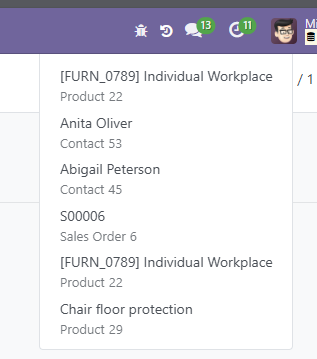

Logs the model and record id whenever a user opens a form view. A new systray icon shows recent items in a dropdown so users can jump back to the record in one click.
Store view history on every form view open.
Quick access to recently viewed records.
Toggle logging per user in Preferences.
